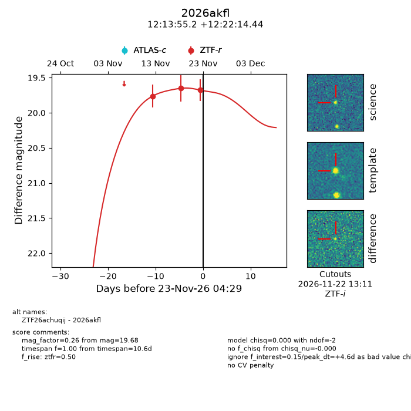
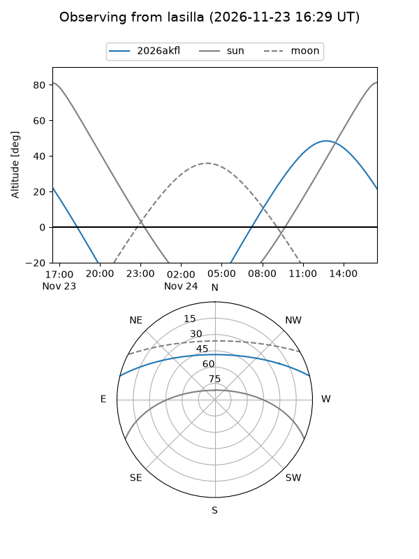
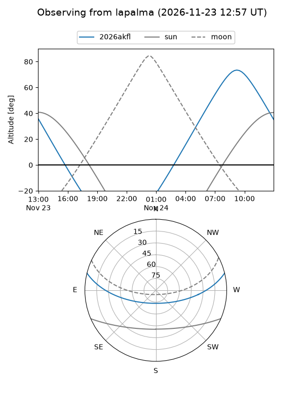
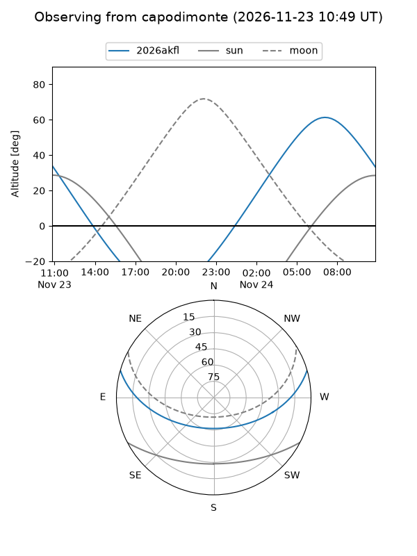
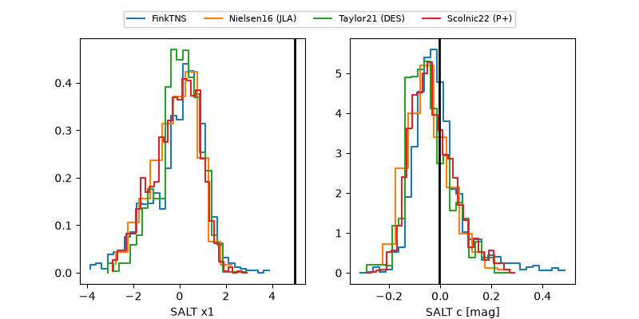

2026akfl
Target 2026akfl at 2026-11-23 16:26
Aliases and brokers:
FINK-ZTF: ztf.fink-portal.org/ZTF26achuqij
Lasair-ZTF: lasair-ztf.lsst.ac.uk/objects/ZTF26achuqij
ALeRCE-ZTF: alerce.online/object/ZTF26achuqij
YSE-PZ: ziggy.ucolick.org/yse/transient_detail/2026akfl
TNS name: wis-tns.org/object/2026akfl
Direct TNS query: direct search
alt names
ZTF26achuqij (ztf,fink_ztf)
2026akfl (tns,yse)
Coordinates:
equatorial (ra, dec) = 183.4802,+12.37068
equatorial (HMS+DMS) = 12:13:55.25,+12:22:14.44
galactic (l, b) = (270.3177,+72.82172)
Flags:
peak dt: +5.1
Photometry:
last ztfr=19.68
3 ztfr detections
Lightcurve

Visibility



Additional plots
